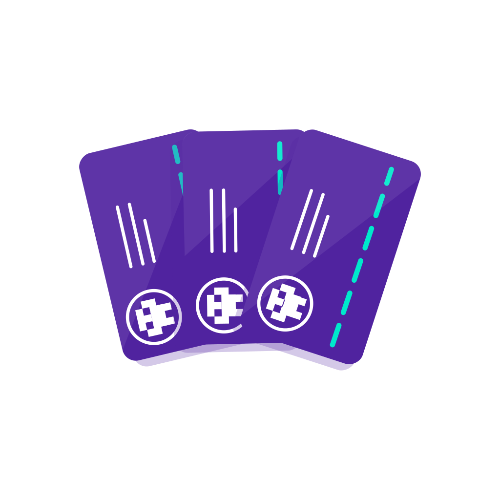

<ion-header no-border no-shadow>
  <ion-navbar color="whitePrimaryContrast">
    <ion-title>{{ 'add-sub-account.title' | translate }}</ion-title>
  </ion-navbar>
</ion-header>
<ion-content>
  <ion-row>
    <!-- TODO: add originate -->
    <card-actionable
      [imageName]="'add-account.svg'"
      [text]="'add-sub-account.add-account_card.text' | translate"
      [heading]="'add-sub-account.add-account_card.heading' | translate"
    ></card-actionable>
  </ion-row>
  <ion-row padding>
    <span ion-text class="font--weight__bold" color="primary">{{ 'add-sub-account.accounts_label' | translate }}</span>
  </ion-row>

  <div padding-horizontal class="empty-list" *ngIf="!subAccounts.length">
    
    <p>
      {{ 'add-sub-account.no-imports_text' | translate }}
    </p>
  </div>

  <ion-row *ngFor="let subAccount of subAccounts; let i = index" no-padding>
    <ion-col col-10 no-padding>
      <portfolio-item [wallet]="subAccount.wallet" [maxDigits]="8" tappable (click)="toggleAccount(subAccount)"></portfolio-item>
    </ion-col>
    <ion-col col-2 class="content--align__center-center" no-padding>
      <ion-checkbox [(ngModel)]="subAccount.selected" color="primary"></ion-checkbox>
    </ion-col>
  </ion-row>

  <ion-fab right bottom>
    <!-- TODO: if Tezos show "account" 'account-detail.add-accounts_label' label if Ethereum show "tokens" -->
    <button ion-button round (click)="addSubAccounts()" color="secondary" icon-left [disabled]="!subAccounts.length">
      <ion-icon md-name="add"></ion-icon>
      {{ 'add-sub-account.add-accounts_label' | translate }}
    </button>
  </ion-fab>
</ion-content>
